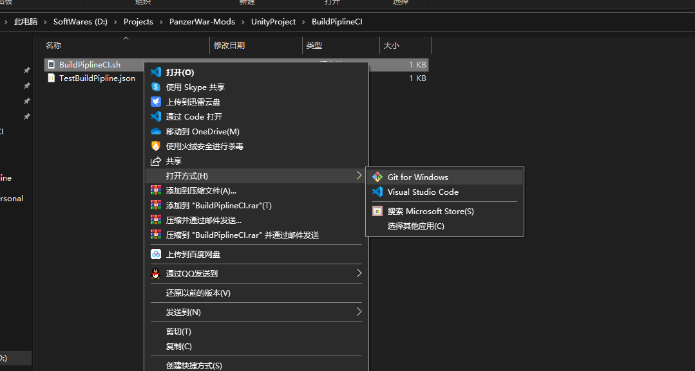
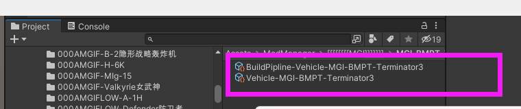

18-1. 持续构建 （脚本化构建模组）
创建持续构建流程，可以更快的进行模组文件的迭代更新，高度自定义打包哪些模组，拷贝至什么文件夹，无需手动操作，也无需打开 Unity 点击任何按钮。 持续构建需要使用 2022 分支项目 2022/5/8 日更新
1. 创建一个 manifest 描述 json
modNames 为一个数组，填写你要构建的模组包列表。 copyInfo 会根据平台，将最终生成的文件拷贝到指定目录。(安卓工程则只拷贝安卓文件，Windows 工程则只拷贝 Windows 文件) isPackage 为 true 则拷贝 modpackage 为 false 则拷贝 buildpipline 原始资源（传 Steam 创意工坊用）
案例 TestBuildPipline.json
- 构建模组包 BuildPipline-Lua-ModeRes 与 BuildPipline-Vehicles ，生成 modpackage 文件。
- 将安卓平台资源拷贝至 D:/Projects/Android-Ship 将电脑平台资源拷贝至 D:/Projects/Windows-Ship
{
"infos": [
{
"modNames": [
"BuildPipline-Lua-ModeRes",
"BuildPipline-Vehicles"
],
"copyInfo": [
{
"platform": "Android",
"dstDir": "D:/Projects/Android-Ship"
},
{
"platform": "StandaloneWindows64",
"dstDir": "D:/Projects/Windows-Ship"
}
],
"isPackage" : true
}
]
}
2. CI 脚本
调用 ShanghaiWindy.Editor.Utility_BuildPipline.DoBuildPiplineManifest 传入 -config 参数 (manifest 路径)
案例 BuildPiplineCI.sh
projectDir 为你的 Unity 项目路径 manifestDir 为 步骤.1 中的 manifest 的 json 文件的路径 editorDir 为你的 Unity 安装路径 logPath 为你的打包日志输出路径 （Windows 上执行 bash，可安装一个 git，然后通过 git bash 执行以下脚本）
projectDir="D:\Projects\PanzerWar-URP"
manifestDir="D:\Projects\PanzerWar-URP\CLI\BuildPiplineCI\TestBuildPipline.json"
editorDir="H:\UnityEditor\2021.3.0f1\Editor\Unity.exe"
logPath="D:\Projects\PanzerWar-URP\CLI\BuildPiplineCI\log.txt"
$editorDir -projectPath $projectDir -batchmode -quit -executeMethod ShanghaiWindy.Editor.Utility_BuildPipline.DoBuildPiplineManifest -config $manifestDir -logFile $logPath
完整的构建案例，可直接查看 PanzerWar-Mods\UnityProject\BuildPiplineCI 文件夹， **调整 **BuildPiplineCI.sh 为自己项目的路径，用 git bash 方式执行即可。 
3. Jenkins 集成
4. 特殊情况
1. BuildPipline 位于 ModManager 的子文件夹
这种情况，需要 modNames 设置名称时候，也要加上前缀 比如位于 Assets/ModManager/AAAA/BBBB/Vehicle-XXX 则填写 AAAA/BBBB/Vehicle-XXX 